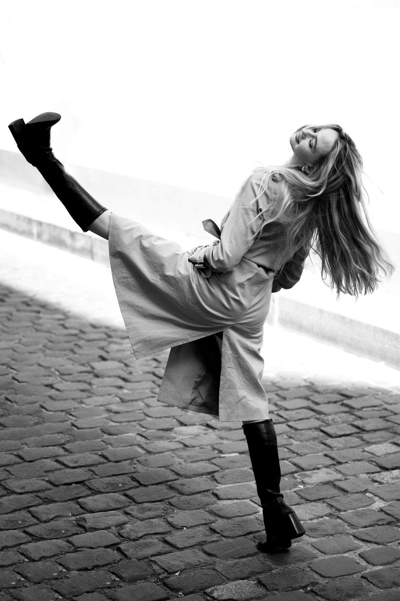
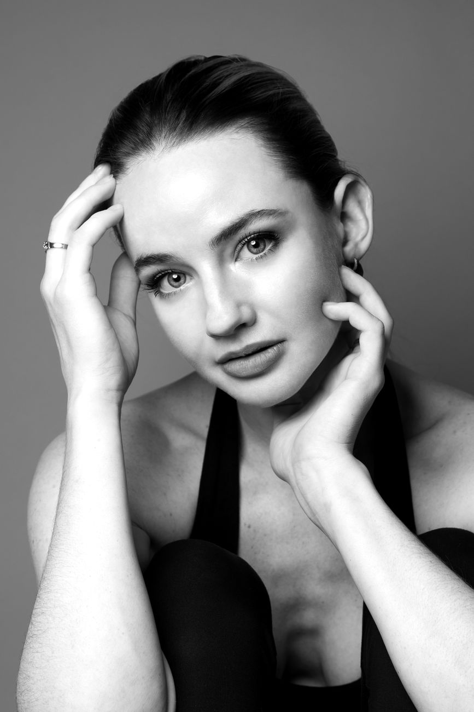
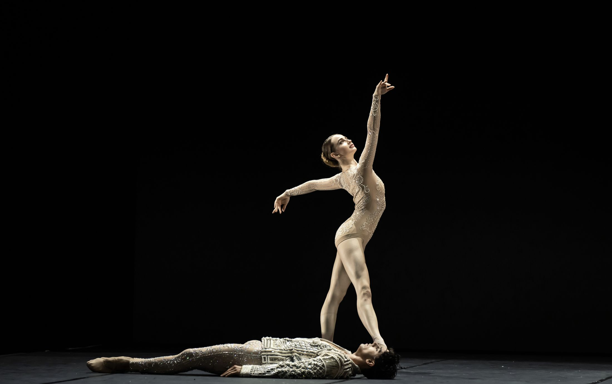
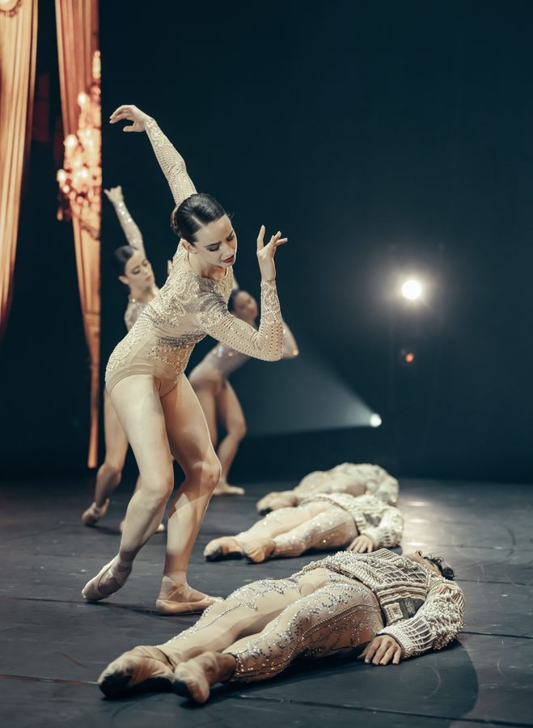
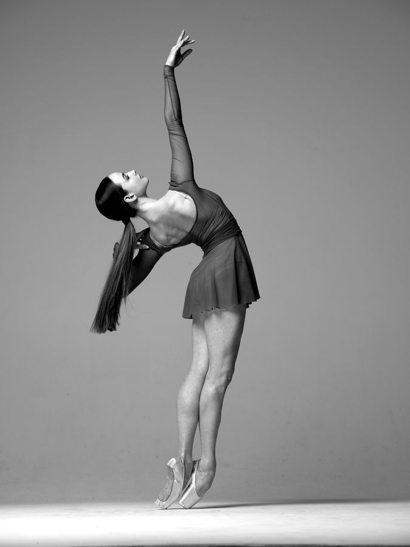
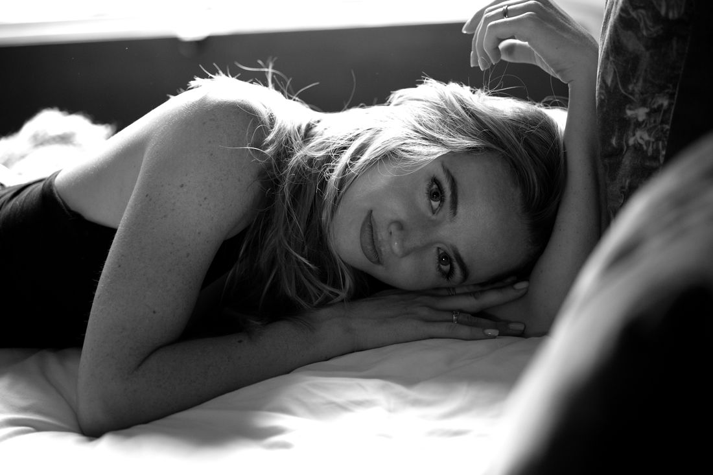
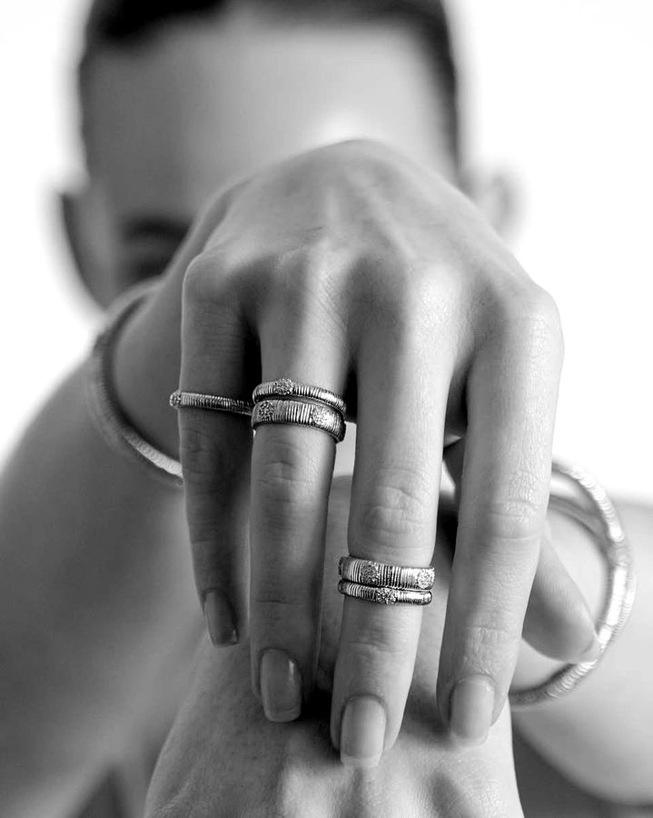

Madeleine Bell
Créer, bouger, faire de l'art.
To create, to move, to make art.
Danseuse classique, chorégraphe et artiste. Je conçois, chorégraphie et interprète des films et des campagnes pour les maisons de mode et de beauté.
Classical dancer, choreographer and artist. I conceive, choreograph and perform films and campaigns for fashion and beauty houses.

01 — Profil
01 — Profile
La discipline du classique, mise au service d'images d'aujourd'hui. Chaque projet est pensé comme une œuvre.
Classical discipline, in service of images made now. Every project is approached as a work of art.
Concevoir
Conceive
L'idée, le lieu, la lumière, le rapport au vêtement.
The idea, the space, the light, the relationship to the garment.
Chorégraphier
Choreograph
Une écriture du mouvement construite pour la caméra.
Movement written for the camera.
Interpréter
Perform
La précision d'une danseuse formée au classique, prise après prise.
The precision of a classically trained dancer, take after take.

Née en Australie, formée au Charlesworth Ballet College de Perth, installée à Paris depuis plus de sept ans. Je travaille entre le classique et le contemporain, à l'Opéra de Paris, au Teatro Massimo de Palerme et sur les plateaux de tournage.
J'ai dansé pour plusieurs éditions de la Paris Fashion Week, pour les Jeux olympiques de Paris 2024 et pour la famille royale à Abu Dhabi. À l'écran : Apple TV+, Canal+ et Prime Video, dont la série « Étoile ».
Je suis aussi chorégraphe, mannequin et directrice du mouvement, et danseuse bénévole pour What Dance Can Do, association auprès des enfants hospitalisés. J'écris une newsletter bilingue sur le corps, Paris et ce qu'on ne voit pas depuis la salle.
Born in Australia, trained at Charlesworth Ballet College in Perth, based in Paris for over seven years. I work between classical and contemporary dance, at the Paris Opera, the Teatro Massimo in Palermo and on film sets.
I have danced for several seasons of Paris Fashion Week, for the Paris 2024 Olympic Games and for the royal family in Abu Dhabi. On screen: Apple TV+, Canal+ and Prime Video, including the series “Étoile”.
I am also a choreographer, model and movement director, and a volunteer dancer with What Dance Can Do, an association for children in hospital. I write a bilingual newsletter about the body, Paris and what you can't see from the audience.
- Scènes
- Stages
- Opéra Garnier · Teatro Massimo · Emirates Palace
- Références
- Clients
- Porsche · Danse avec les Stars
- Écran
- Screen
- Apple TV+ · Canal+ · Prime Video
- Événements
- Events
- Paris Fashion Week · Jeux olympiques Paris 2024
- Paris Fashion Week · Paris 2024 Olympic Games
- Formation
- Training
- Charlesworth Ballet College, Perth · Certificate III · coaching Jean-Marie Didière (Opéra de Paris)
- Charlesworth Ballet College, Perth · Certificate III · coaching with Jean-Marie Didière (Paris Opera)
- Langues
- Languages
- Anglais · français · italien (notions)
- English · French · Italian (basic)

Solo · Fujiko Nakaya · 2026
Body of MovementTouching the Clouds
Un solo tourné dans l'installation de brouillard de Fujiko Nakaya, sous la coupole de la Bourse de Commerce à Paris. Un corps seul dans le nuage, à la lumière du jour.
A solo shot inside Fujiko Nakaya's fog installation, under the dome of the Bourse de Commerce in Paris. One body alone in the cloud, in daylight.
ChiffresNumbers
02 — Instagram, 30 derniers jours
02 — Instagram, last 30 days
vues
views
comptes atteints, dont 85 % hors abonnés
accounts reached, 85% non-followers
d'interactions par compte atteint
interactions per account reached
abonnés · compte vérifié
followers · verified account
Films les plus vus
Most-viewed films
- 182KSolo sous les lustresSolo under the chandeliers26 100 interactions · août 202626,100 interactions · August 2026
- 80KPOV: a different kind of office9 400 interactions · septembre 20269,400 interactions · September 2026
- 24KFilm chorégraphique · Fujiko Nakaya, Bourse de CommerceChoreographic film · Fujiko Nakaya, Bourse de Commerce
Audience
Audience
Jeune, féminine, internationale. 85 % des vues viennent de personnes qui ne me suivent pas encore : les films circulent bien au-delà du compte.
Young, female, international. 85% of views come from people who don't follow me yet: the films travel well beyond the account.
Source : Instagram Insights au 25.09.2026 · répartition de l'audience : audit 2026
Source: Instagram Insights at 25.09.2026 · audience split: 2026 audit




03 — Substack
« Le français est devenu la langue dans laquelle je vis toute ma vie. »
“French has become the language I live my whole life in.”
How I learnt French · 2026
Une newsletter bilingue en format long, où j'écris sur le corps, le travail, Paris et ce qui se passe hors scène.
A bilingual long-form newsletter where I write about the body, the work, Paris and what happens offstage.
Formats
04 — Ce que l'on peut créer ensemble
04 — What we can make together
- I
Film de campagne
Campaign film
Concept, chorégraphie, interprétation. De 30 à 90 secondes, pour vos canaux et les miens.
Concept, choreography, performance. 30 to 90 seconds, for your channels and mine.
- II
Direction du mouvement
Movement direction
Sur vos shootings et défilés, avec vos mannequins. Je construis le mouvement pour que le vêtement bouge comme il a été pensé.
On your shoots and shows, with your models. I build the movement so the garment moves the way it was designed to.
- III
Série éditoriale
Editorial series
Films et carrousels sur @_madeleine_bell. Mention « Partenariat rémunéré », jamais de code promo.
Films and carousels on @_madeleine_bell. Clearly marked as a paid partnership, never a promo code.
- IV
Performance
Performance
Lancement, vitrine, événement en boutique. Une pièce courte créée pour le lieu.
Launch, window, in-store event. A short piece created for the space.
Tarifs, droits d'utilisation et exclusivités sur demande
Rates, usage rights and exclusivity on request
05 — Contact
TravaillonsLet's work
Basée à Paris, disponible à l’international. Pour une campagne, un film, une création ou un shooting, écrivez-moi.
Based in Paris, available internationally. For a campaign, a film, a new piece or a shoot, get in touch.